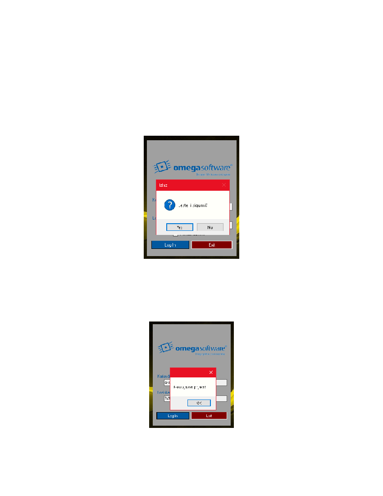

5
Pritiskom na tipku „Exit“ korisniku se javlja upit Upit provjera je li korisnik siguran ili je sluèajno pritisnuo
tipku za izlaz Kod provjere korisniku se javljaju dvije moguænosti
1)
Korisnik pritiskom na tipku „Yes“ potvrðuje zahtjev za izalzom iz programa i gasi aplikaciju
2)
Korisnik pritiskom na tipku „No“ odbija zahtjev za izlazom iz programa i vraæa se na obrazac za
prijavu.
Detaljan prikaz upita prikazan je na sljedeæoj slici (Slika 5 )
Slika 5. Upit za izlaz iz programa
Pritiskom na tipku „Log In“ aplikacija provjera korisnikov unos Ako je korisnik unio krive podatke, odnsno
ako je unio podatke koje se ne nalaze u bazi podataka, aplikacija æe javiti grešku „Neuspješna prijava “
(Slika 6.).
Slika 6 Neuspješna prijava